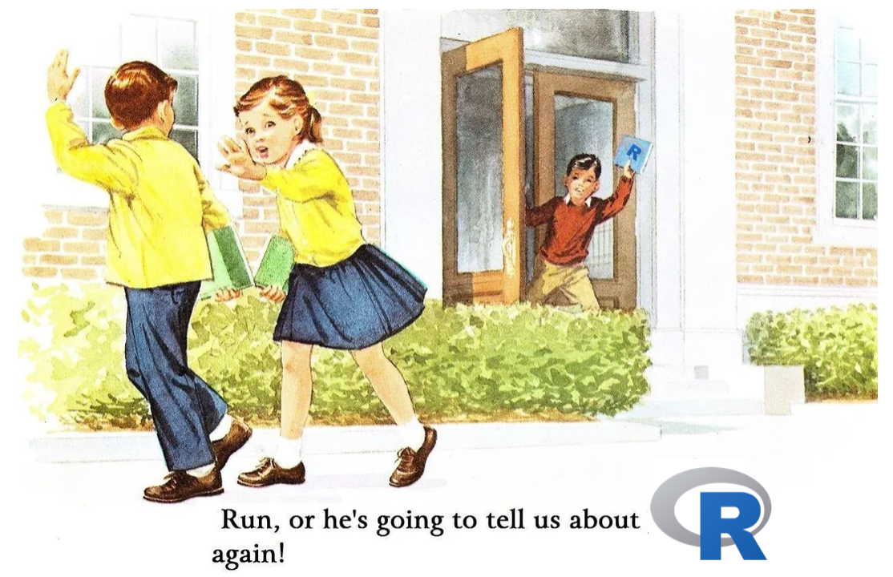
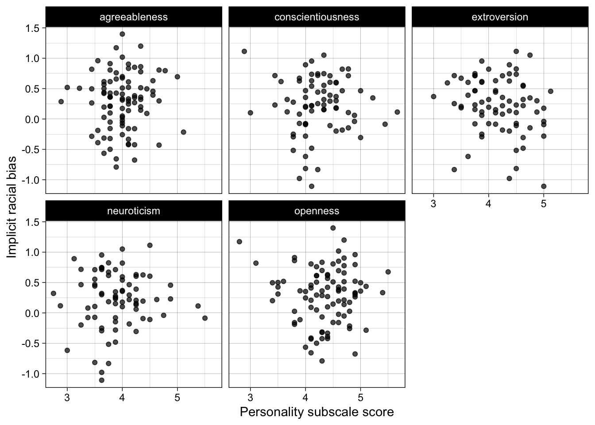

Code
2+2[1] 4Literate programming is the idea that code and text should be written in the same document to produce a narrative with reproducible results. It is therefore very suited to writing scientific reports and manuscripts.
Code can be written in ‘in-line’ in the text as follows: the code “2” is run and produces the output “2”. In your local .qmd document, you have hover over the in-line code and press cmd-enter or cmd-return (Mac) / ctrl-enter or ctrl-return (Windows) to run the code.
For any code that isn’t extremely short, you should write it in code chunks.
These are written as follows: three backticks followed by “{r}” specifies that it is a chunk of R code, then the code, then three more backticks to end the chunk. Note that backticks are not apostrophes! (` vs ’).
You can also insert a code chunk with Ctrl + Alt + I (Windows) or Cmd + Alt + I (Mac).
Output appears below chunks. You can run all code in a chunk by clicking the right-arrow button to the right of the chunk:
You can also run all previous chunks in a document not including the current chunk by clicking the downward arrow button to the right of the chunk:
For example, run this code chunk in the local version of .qmd file. Note that the buttons are only visible in RStudio, not the ebook version of this file.
2+2[1] 4Quarto (.qmd) and RMarkdown (.Rmd) files can produce .html files that can be viewed in any web browser. This has two key functions:
Quarto (.qmd) and RMarkdown files (.Rmd) allow you to use markdown formatting. This is a very simple way to do basic formatting, such as headings, emphasis, bullet points and lists.
Markdown formatting can be used as follows.
Don’t forget the space after the #, or spaces between lines to separate sections of different types!
# Level 1 heading
## Level 2 heading
### Level 3 heading
Normal text.
*italic text*
**bold text**
- bullet points
- bullet points
1. numbered list
2. numbered list
Display an image in visual editor/on rendering:
Each of the above are rendered as follows in the .html file once rendered:
Normal text.
italic text
bold text
Display an image in visual editor/on rendering: 
Levels of heading are extremely useful for structuring your report.
toc: true, as this file does).LaTeX is a typesetting system designed for creating professional-looking documents, especially those containing mathematics, tables, and references. In psychology research, you are likely to encounter LaTeX most often indirectly—because Quarto (which we use throughout this book) relies on LaTeX in the background when generating PDF outputs.
You do not need to learn LaTeX in detail to work reproducibly with R code in Quarto documents, but it is useful to understand what it does and if you want to include math in your Quarto documents: it ensures that your documents are formatted consistently, citations and references are automatically handled, and statistical results or equations are rendered cleanly. In practice, this means you can focus on your analyses and writing in R and Quarto, while LaTeX quietly manages the professional typesetting for you.
You can include math in-line with LaTeX code placed between dollar signs: e.g., “$\eta_{p}^{2}$ = 0.03” produces “\(\eta_{p}^{2}\) = 0.03”.
You can also write longer chunks of LaTeX, for example to specify that the mean (\(\bar{x}\)) is the sum of all elements of the vector \(x\) divided by number of elements in the vector (\(n\)).
This code:
$$
\bar{x} = \frac{1}{n} \sum_{i=1}^n x_i.
$$Produces this math:
\[ \bar{x} = \frac{1}{n} \sum_{i=1}^n x_i. \]
Writing math via LaTeX often sounds like a very advanced skill when you’re introduced to it but it can be very useful, especially for Monte Carlo simulation studies, which I teach in a separate course.
Raw data can be read in from .csv, .xlsx, SPSS .sav, and many other types of files. Raw data can be processed and tidied into analyzable data and saved to disk.
We will cover these functions in later chapters. For the moment, the point to appreciate is that clear, reproducible workflows are easy to write in R+tidyverse.
Read the comments and code below to see if you can understand the general flow of what is being done, even without knowing these functions yet.
# dependencies
library(dplyr)
library(tidyr)
library(readr)
# load raw data
dat_raw <- readr::read_csv("../data/raw/data_raw_bfi.csv")
# process data
dat_processed <- dat_raw %>%
# rename variable to make it clearer
dplyr::rename(race_iat = IAT_score) %>%
# exclude participants with missing data or who did not meet performance criteria
dplyr::filter(complete_individual_differences_data == TRUE & exclude_iat == FALSE) %>%
# calculate sum scores for the BFI personality subscales
dplyr::rowwise() %>%
dplyr::mutate(openness = mean(c_across(starts_with("bfi_o"))),
conscientiousness = mean(c_across(starts_with("bfi_c"))),
extroversion = mean(c_across(starts_with("bfi_e"))),
agreeableness = mean(c_across(starts_with("bfi_a"))),
neuroticism = mean(c_across(starts_with("bfi_n")))) %>%
dplyr::ungroup() %>%
# retain only the columns needed
dplyr::select(race_iat, openness, conscientiousness, extroversion, agreeableness, neuroticism)
# create a directory to save processed data to
dir.create("../data/processed")
# save data
readr::write_csv(dat_processed, "../data/processed/data_processed_bfi_race_iat.csv")
# reshape to long format for tables and plots
dat_processed_long <- dat_processed %>%
tidyr::pivot_longer(cols = c(openness, conscientiousness, extroversion, agreeableness, neuroticism),
names_to = "subscale",
values_to = "score")Summary statistics such as sample sizes, means and Standard Deviations can be calculated, rounded, and presented in tables.
Again, we will cover these functions in later chapters. For the moment, simply notice that this is quite simple to do. As before, tead the comments and code below to see if you can understand the general flow of what is being done, even without knowing these functions yet.
# dependencies
library(janitor)
library(knitr)
library(kableExtra)
# table
dat_processed_long %>%
# summarize mean and SD by subscale
dplyr::group_by(subscale) %>%
dplyr::summarize(n = dplyr::n(),
m = mean(score, na.rm = TRUE),
sd = sd(score, na.rm = TRUE)) %>%
# round estimates
dplyr::mutate(m = janitor::round_half_up(m, digits = 2),
sd = janitor::round_half_up(sd, digits = 2)) %>%
# print nicer table
knitr::kable(align = 'r') |>
kableExtra::kable_styling()| subscale | n | m | sd |
|---|---|---|---|
| agreeableness | 167 | 4.00 | 0.38 |
| conscientiousness | 167 | 4.24 | 0.48 |
| extroversion | 167 | 4.18 | 0.49 |
| neuroticism | 167 | 3.91 | 0.50 |
| openness | 167 | 4.37 | 0.48 |
Plots can be made in {ggplot2}, e.g., scatter plots of the association between personality subscales and implicit racial bias.
As before, read the comments and code below to see if you can understand the general flow of what is being done, even without knowing these functions yet.
# dependencies
library(ggplot2)
# plot
ggplot(dat_processed_long, aes(score, race_iat)) +
geom_point(alpha = 0.7) +
facet_wrap(~ subscale) +
theme_linedraw() +
ylab("Implicit racial bias") +
xlab("Personality subscale score")
Analyses can be run, and even their results extracted an interpreted, with the help of R packages such as {report} and {parameters} from the easystats cluster of packages.
# dependencies
library(report)
# fit correlation test
res <- cor.test(formula = ~ race_iat + extroversion,
data = dat_processed,
use = "pairwise.complete.obs")
# create standard report of results
report::report_text(res)Effect sizes were labelled following Funder's (2019) recommendations.
The Pearson's product-moment correlation between race_iat and extroversion is
negative, statistically not significant, and small (r = -0.18, 95% CI [-0.39,
0.05], t(73) = -1.52, p = 0.132)Edit your local copy of this .qmd file to make the following changes.
Use the install.packages() function to install the packages {tidyverse}, {janitor}, {knitr}, {kableExtra}, and {report}. Remember to exclude the “{}” and use quotation marks around the package names. Run the code to install these packages.
Either type it yourself using backticks or use the keyboard shortcut: Ctrl + Alt + I (Windows) or Cmd + Alt + I (Mac). Enter some simple working code inside the chunk:
x to have the value 5y to have the value x minus 3.y as output.Run the code in the chunk by clicking the green right-arrow:
Need a refresher on variable assignment? Go back to the chapter on .
Add the following text to the YAML header on line 4: date: today. Now when you render again, it will list today’s date so that you know when the report was created.
Change the ‘aesthetics’ call from aes(score, race_iat) to aes(score, race_iat, color = subscale). Run all previous chunks to reload and reprocess the data using this button: Then, run the plot chunk again using this one to view your more colorful plot: